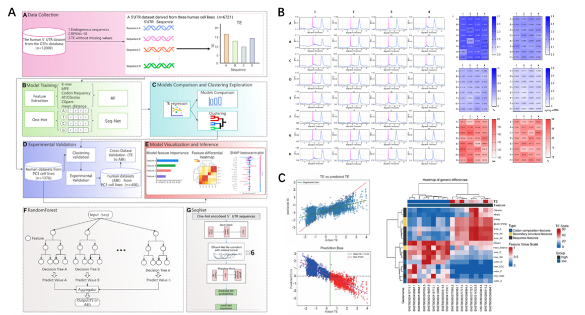

Research Background and Significance
The untranslated regions (UTRs) of mRNA play a crucial role in determining its intracellular stability and translation efficiency, yet systematic evaluation of their functions remains technically challenging. To address this challenge, the research team established a high-throughput screening system using firefly luciferase as a reporter gene, enabling precise quantification of translation efficiency across different 5'UTRs. Furthermore, the team developed an innovative sequence clustering strategy that significantly reduced the training dataset size while maintaining or even improving model predictive accuracy. This approach more accurately reflects protein expression levels in mRNA therapeutics compared to traditional Translation Efficiency (TE) metrics (Nucleic Acids Res. 2025, 53, gkaf861). For 3'UTR optimization, the team designed and inserted regulatory elements with enhanced activity. By anchoring the cytoplasmic natural RNA-binding protein HuR, they effectively increased mRNA stability and significantly prolonged the half-life of the encoded protein, providing a novel strategy to enhance the sustained expression of mRNA therapeutics in vivo (Mol. Ther. Nucleic Acids 2025, 102485). Furthermore, addressing challenges such as low construction efficiency and strong exogenous sequence dependency in circular RNA (circRNA), the team optimized 3' and 5' splice sites and their adjacent homologous arms. This enabled efficient circRNA circularization without introducing any exogenous fragments, achieving efficiency comparable to the PIE method. The resulting circRNAs exhibit slower degradation and higher stability in cells, offering a novel pathway for constructing safer, longer-lasting circRNA molecules (Mol. Ther. Nucleic Acids 2025, 102626). This strategy avoids additional sequence insertions, significantly enhances circularization precision, and provides important insights for future circRNA applications in vaccines, protein replacement therapies, and long-acting gene expression.
Core Methods and Technologies

Figure 1. (A) Research workflow diagram: encompassing data collection, model training, cluster exploration, wet lab validation, model visualization, and analysis. (B) Homogeneity validation of mRNA synthesis from high-throughput 5'UTR libraries. (C) Heatmap of feature differential analysis comparing editing efficiency in this experiment with regression fitting and editing efficiency of traditional TEs.